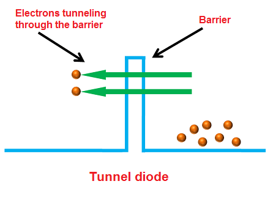

What is a Tunnel Diode?#
Author: Roozbeh Salehabadi
The tunnel diode is also known as the “Esaki Diode”. It was invented by “Leo Esaki” in 1957, and for this invention, he received Nobel in 1973. Leo Esaki observed that if a semiconductor diode is heavily doped with impurities, it will exhibit negative resistance. Negative resistance means the current across the tunnel diode decreases when the voltage increases. A tunnel diode is also known as Esaki diode which is named after Leo Esaki for his work on the tunneling effect. The operation of tunnel diode depends on the quantum mechanics principle known as “Tunneling”. In electronics, tunneling means a direct flow of electrons across the small depletion region from n-side conduction band into the p-side valence band. The circuit symbol of tunnel diode is shown in the below figure. In tunnel diode, the p-type semiconductor act as an anode and the n-type semiconductor act as a cathode.
import schemdraw
from schemdraw import elements as elm
with schemdraw.Drawing():
elm.DiodeTunnel()
Doping in a Tunnel Diode#
Doping in diodes involves adding impurities to a semiconductor material, such as silicon or gallium arsenide, to create regions with excess electrons (n-type) or holes (p-type), forming a p-n junction. The level of doping controls the diode’s electrical characteristics, including its forward and reverse current behavior. In tunnel diodes, doping is extremely high—about 1000 times greater than a normal diode—resulting in a very narrow depletion region. The depletion region is a region in a p-n junction diode where mobile charge carriers (free electrons and holes) are absent. Depletion region acts like a barrier that opposes the flow of electrons from the n-type semiconductor and holes from the p-type semiconductor.
What is Tunneling?#
In tunnel diode, the valence band and conduction band energy levels in the n-type semiconductor are lower than the valence band and conduction band energy levels in the p-type semiconductor. Unlike the ordinary p-n junction diode, the difference in energy levels is very high in tunnel diode. Because of this high difference in energy levels, the conduction band of the n-type material overlaps with the valence band of the p-type material. Quantum mechanics says that the electrons will directly penetrate through the depletion layer or barrier if the depletion width is very small. The depletion layer of tunnel diode is very small. It is in nanometers. So the electrons can directly tunnel across the small depletion region from n-side conduction band into the p-side valence band.

How does a Tunnel Diode work?#
In ordinary diodes, current is produced when the applied voltage is greater than the built-in voltage of the depletion region. But in tunnel diodes, a small voltage which is less than the built-in voltage of depletion region is enough to produce electric current. In tunnel diodes, the electrons need not overcome the opposing force from the depletion layer to produce electric current. The electrons can directly tunnel from the conduction band of n-region into the valence band of p-region. Thus, electric current is produced in tunnel diode.
Step One: Unbiased Tunnel Diode#
When no voltage is applied to the tunnel diode, it is said to be an unbiased tunnel diode. In tunnel diode, the conduction band of the n-type material overlaps with the valence band of the p-type material because of the heavy doping. Because of this overlapping, the conduction band electrons at n-side and valence band holes at p-side are nearly at the same energy level. So when the temperature increases, some electrons tunnel from the conduction band of n-region to the valence band of p-region. In a similar way, holes tunnel from the valence band of p-region to the conduction band of n-region. However, the net current flow will be zero because an equal number of charge carriers (free electrons and holes) flow in opposite directions.
Step Two: Small voltage is applied#
When a small voltage is applied to the tunnel diode which is less than the built-in voltage of the depletion layer, no forward current flows through the junction. However, a small number of electrons in the conduction band of the n-region will tunnel to the empty states of the valence band in p-region. This will create a small forward bias tunnel current. Thus, tunnel current starts flowing with a small application of voltage.
Step Three: Voltage is sligthly increased#
When the voltage applied to the tunnel diode is slightly increased, a large number of free electrons at n-side and holes at p-side are generated. Because of the increase in voltage, the overlapping of the conduction band and valence band is increased. In simple words, the energy level of an n-side conduction band becomes exactly equal to the energy level of a p-side valence band. As a result, maximum tunnel current flows.
Step Four: Voltage is further increased#
If the applied voltage is further increased, a slight misalign of the conduction band and valence band takes place. Since the conduction band of the n-type material and the valence band of the p-type material sill overlap. The electrons tunnel from the conduction band of n-region to the valence band of p-region and cause a small current flow. Thus, the tunneling current starts decreasing.
Step Five: Voltage is largely increased#
If the applied voltage is largely increased, the tunneling current drops to zero. At this point, the conduction band and valence band no longer overlap and the tunnel diode operates in the same manner as a normal p-n junction diode. If this applied voltage is greater than the built-in potential of the depletion layer, the regular forward current starts flowing through the tunnel diode. The portion of the curve in which current decreases as the voltage increases is the negative resistance region of the tunnel diode. The negative resistance region is the most important and most widely used characteristic of the tunnel diode. A tunnel diode operating in the negative resistance region can be used as an amplifier or an oscillator.
V-I Characteristics of Tunnel Diode#
The maximum current that a diode reaches is Ip and voltage applied is Vp. The current value decreases, when more amount of voltage is applied. Current keeps decreasing until it reaches a minimal value. The small minimal value of current is Iv. From the above graph, it is seen that from point A to B current reduces when voltage increases. That is the negative resistance region of diode. In this region, tunnel diode produces power instead of absorbing it.
What is Negative Resistance in Tunnel Diode?#
It is shown above in the graph that between the point Iv and Ip the current starts decreasing when the voltage is applied to it. This region of the graph is known as the negative resistance region. It is the most important characteristic of the tunnel diode. In this region, the tunnel diode generates the power instead of absorbing it.
Advantages and Disadvantages of Tunnel Diodes#
Advantages
Long life
High-speed operation
Low noise
Low power consumption
Disadvantages
Tunnel diodes cannot be fabricated in large numbers
Being a two terminal device, the input and output are not isolated from one another
Tunnel diode usage#
Tunnel diodes are widely used in high-speed switching and oscillation applications due to their ability to operate at extremely fast speeds. Their negative resistance characteristic allows them to function efficiently in microwave and millimeter-wave frequencies, making them ideal for use in oscillators, amplifiers, and mixers in communication systems. Tunnel diodes are also used in certain types of pulse circuits and in frequency modulators for radar and satellite systems. In addition, they can be applied in high-frequency signal detection and low-noise amplifiers, where their fast response and low power consumption provide significant advantages over other semiconductor devices. Their unique properties make them valuable in a variety of applications that require rapid switching and high-frequency performance.
Conclusion#
In this article, we explored the concept of tunnel diodes, their unique properties, structure, and applications in electronic circuits. Tunnel diodes are a type of diode that exhibit quantum tunneling, allowing them to function in ways that differ from traditional diodes. This project focused on understanding their I-V characteristics, the effect of heavy doping on their behavior, and their potential in high-speed switching and oscillatory applications. Tunnel diodes are vital in various advanced electronic systems, contributing to faster and more efficient circuits. The study of tunnel diodes highlights their significance in modern electronics and provides a foundation for future research and development in this area.
Sources#
https://www.physics-and-radio-electronics.com/electronic-devices-and-circuits/semiconductor-diodes/tunneldiode-howitworks.html https://circuitglobe.com/tunnel-diode.html https://www.geeksforgeeks.org/tunnel-diode/ https://www.electronicshub.org/tunnel-diode-working-characteristics-applications/ https://www.electrical4u.com/tunnel-diode/#What-is-a-Tunnel-Diode